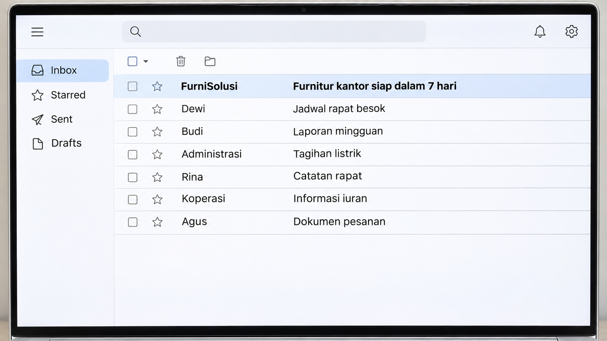
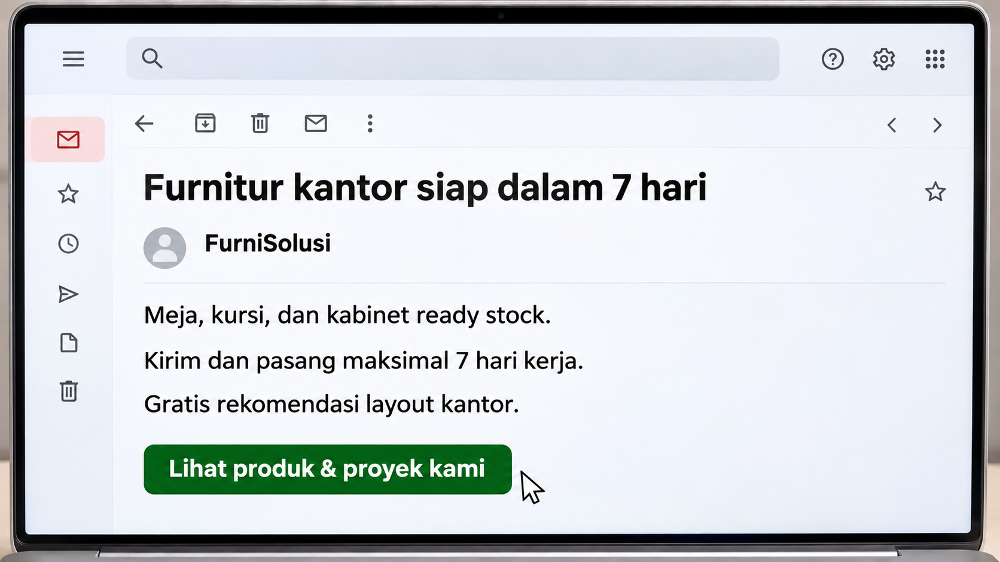
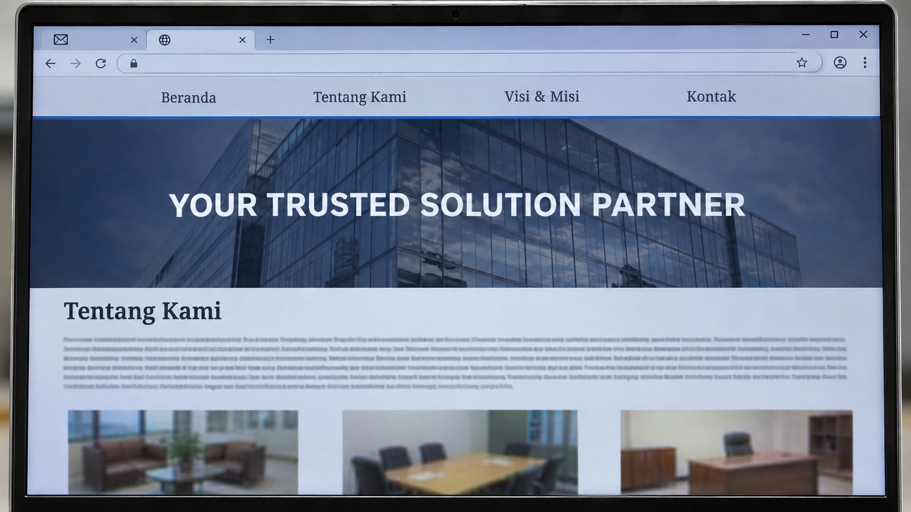

Tadi Sudah Tertarik
Visual / aksiMedium shot. Dia mencoba memutar buku catatan tipis di ujung pulpen, seperti memutar bola basket di jari. Bukunya berputar, goyang, lalu jatuh ke meja. Dia tersenyum kecil. Baru mau mencoba lagi, matanya melirik ke laptop.
AudioSuasana kantor yang tenang. Bunyi buku jatuh ke meja. Satu notifikasi email.

Visual / aksiInsert layar: inbox email. Ada satu email baru yang belum dibaca di paling atas. Pengirim: FurniSolusi. Subjek: "Furnitur kantor siap dalam 7 hari".
AudioSuasana kantor berlanjut.
Visual / aksiKembali ke dia, sedikit lebih dekat. Dia meletakkan pulpen di atas buku, mencondongkan badan, lalu mengetuk trackpad.
AudioKlik trackpad yang halus.

Visual / aksiInsert layar: email yang sudah terbuka. Singkat, jelas, mudah dibaca. Kursor bergerak pelan ke tombol "Lihat produk & proyek kami".
AudioHening ruangan. Tahan cukup lama supaya ketiga baris sempat terbaca.
Visual / aksiClose-up wajah. Alisnya naik sedikit: benar-benar tertarik, bukan senyum ala iklan. Dia klik.
AudioSatu klik.

Visual / aksiInsert layar: website terbuka di tab baru. Foto gedung yang generik, headline "YOUR TRUSTED SOLUTION PARTNER". Dia scroll: paragraf "Tentang Kami" yang panjang, lalu "Visi & Misi", lalu foto furnitur yang kecil dan buram, tanpa nama dan tanpa harga. Tidak ada apa pun soal ready stock atau 7 hari.
AudioBunyi scroll yang ringan.
Visual / aksiOver-the-shoulder, sebagian wajahnya masih terlihat. Kepala miring, dahi sedikit berkerut, scroll sedikit sekali lagi. Dia mengembuskan napas pendek, lalu menutup tab. Layar kembali ke inbox.
AudioEmbusan napas pelan. Klik tutup tab.
Visual / aksiFraming sama seperti shot 1. Dia bersandar, mengambil pulpen dan buku catatan, lalu mencoba memutarnya lagi. Santai, sedikit geli sendiri. Adegan terus berjalan di balik teks penutup.
AudioSuasana kantor. Bunyi pulpen dan buku yang pelan.
Teks penutup (di atas shot 8)
| Waktu | Teks |
|---|---|
| 00:26–00:28 | Website Anda malah bikin kesempatan melayang? Segera konsultasikan dengan ahlinya. |
| 00:28–00:30 | Imajiner |
Tipografi serif putih yang kalem, di atas adegan kantor yang tetap berjalan. Tanpa freeze-frame, tanpa layar hitam, tanpa transisi dramatis.
Gambar dibuat dengan GPT Image sebagai acuan visual, bukan frame final. FurniSolusi adalah supplier fiktif yang dibuat untuk cerita ini.